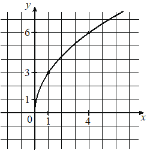

Впишите правильный ответ.
На рисунке изображён график функции вида f( x )=a x . Найдите значение f( 49 ).

КЭС: 3.3 Степенная функция с натуральным и целым показателем. Её свойства и график. Свойства и график корня n-ой степени
Тип ответа: Краткий ответ
Источник ФИПИ